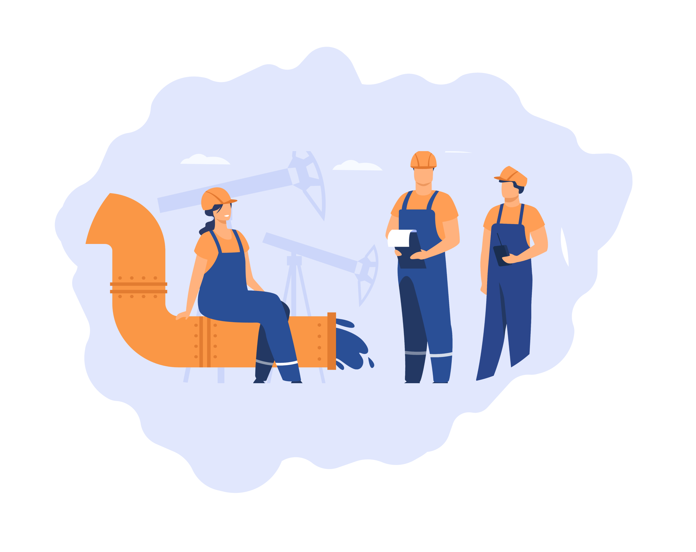

ПЕРЕВАЛКА РОСЛИННИХ ОЛІЙ
Компанія SFT є оператором з перевалки соняшникової та рапсової олії в Україні. Наявність потужностей та наш досвід дозволяє задовольнити індивідуальні потреби кожного клієнта.
Потужності з перевалки становлять до 400 000 мт на рік. Компанія здійснює свою діяльність у порту Південний.